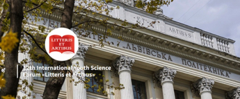
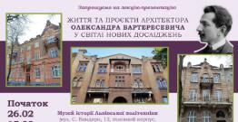
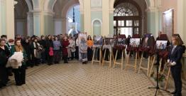
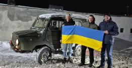
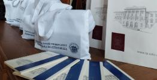
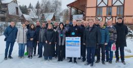
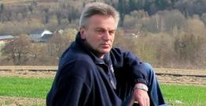

Незабаром у Львівській політехніці
 чт., 12 листоп., 14:00
– чт., 12 листоп., 18:00
чт., 12 листоп., 14:00
– чт., 12 листоп., 18:00Круглий стіл «Історія вивчення обліково-економічних дисциплін у Львівській політехніці за період 1816–2025 років»
 пт., 13 листоп., 10:00
– сб., 14 листоп., 15:00
пт., 13 листоп., 10:00
– сб., 14 листоп., 15:00Міжнародна науково-практична конференція «Спільно для предків — Прикордоння: наша спільна спадщина. Роль волонтерства у збереженні культурної спадщини»
 пт., 13 листоп., 11:00
– пт., 13 листоп., 16:00
пт., 13 листоп., 11:00
– пт., 13 листоп., 16:00Від радіолокації та навігації до інтелектуальних систем: кафедра РЕТС запрошує на День відкритих дверей
 пт., 13 листоп., 17:00
– пт., 13 листоп., 19:00
пт., 13 листоп., 17:00
– пт., 13 листоп., 19:00«Окрилена піснею»: НТБ запрошує на гала-концерт академічного вокалу

чт., 19 листоп., 09:00
– пт., 20 листоп., 15:00XII Міжнародний молодіжний науковий форум «Litteris et Artibus» (LEA-2026)
 чт., 19 листоп., 13:00
– чт., 19 листоп., 15:00
чт., 19 листоп., 13:00
– чт., 19 листоп., 15:00Запрошуємо на зустріч MeetUp з Христиною Теличко, Competence Operations Lead в компанії N-iX
Новини університету
25 лют. 2026, 09:05Студентка ІМФН Софія Гладун про участь у зимовій школі ICMU Constructive Approximation and Its Applications

24 лют. 2026, 17:10Лекція-презентація «Життя і проєкти архітектора Олександра Вартересевича в світлі нових досліджень»

24 лют. 2026, 14:58У Львівській політехніці — фотовиставка «Андрій Парубій веде нас в бій!»

24 лют. 2026, 11:36Центр гуманітарної допомоги Львівської політехніки передав автомобіль для потреб Збройних Сил України
24 лют. 2026, 09:09Науковці НДЛ-26 Львівської політехніки створюють матеріали майбутнього для доріг України

23 лют. 2026, 17:07Затверджено календарний план II туру олімпіади для школярів «Майбутнє з Політехнікою»

23 лют. 2026, 15:12В Університеті відбулася міжнародна конференція з радіоелектроніки, телекомунікацій та комп’ютерної інженерії TCSET-2026

23 лют. 2026, 12:12Людина з фотокамерою: відбувся вечір пам’яті знаного фотомитця, викладача Політехніки Ярослава Данила